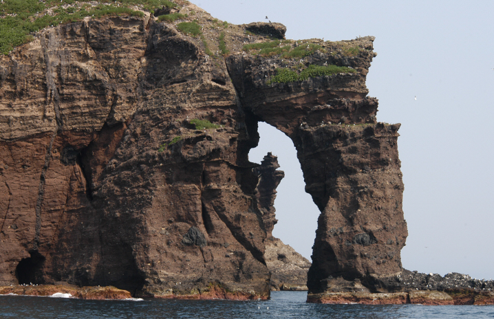
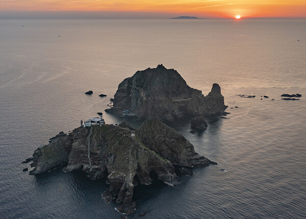
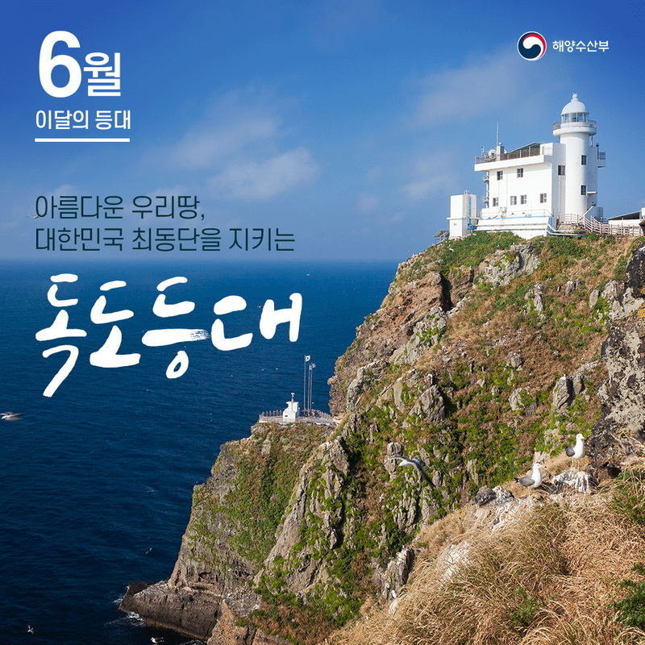

독도는 아름다운 자연경관과 독특한 생태계를 자랑하는 섬으로, 한국 동해에 위치해 있습니다. 이 섬은 두 개의 주요 섬인 동도와 서도, 그리고 89개의 작은 암초로 이루어져 있으며, 총 면적은 약 0.187 km²에 불과하지만 그 매력은 무궁무진합니다.
 독도는 그 자체로 하나의 거대한 자연 박물관입니다. 다양한 관광 명소가 있으며, 그 중에서도 독도의 주요 명소로는 동도의 독도등대, 서도의 독도천연보호구역 등이 있습니다. 이 외에도 섬 주변의 다양한 암초와 해안선은 탐험과 사진 촬영에 최적의 장소입니다.
